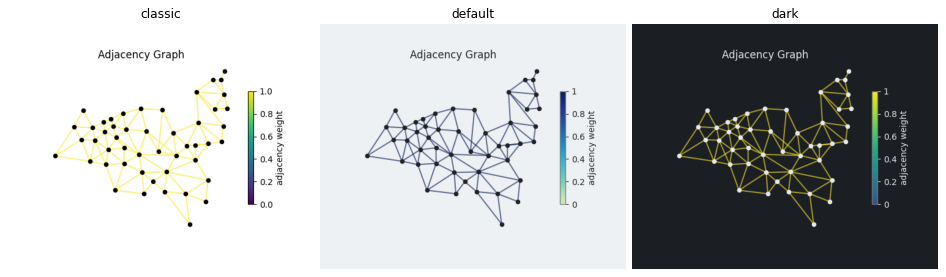
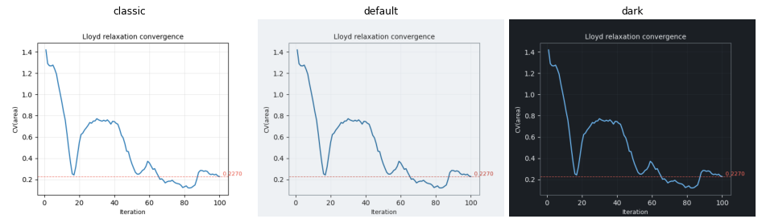
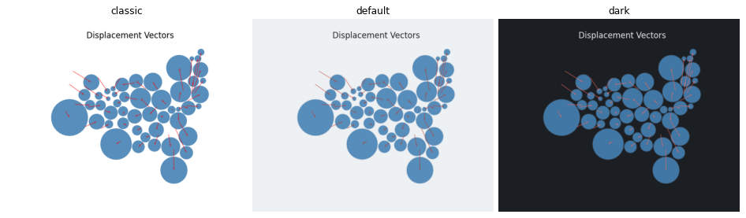
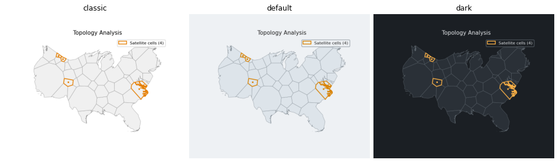
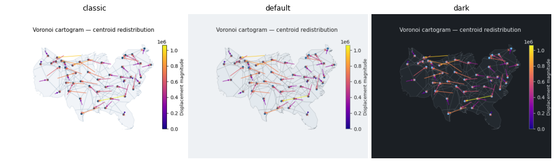

PlotStyle gets series_color, accent_color, positive_color and highlight_color for the fixed colors of the diagnostic overlays of the Voronoi and symbol plots. Default and dark set them; classic keeps the former colors.
make_figures.py draws each plot in classic, default and dark on the PR branch. The colors of the Voronoi convergence, displacement, topology and repair plots in classic are identical to main.
| style fields | series_color, accent_color, positive_color, highlight_color, PlotStyle.pick(name, default) |
| Voronoi | convergence, displacement, topology, repair plots and the history animation |
| symbol | displacement arrows, adjacency nodes, pool tiles of plot_tiling (core_edgecolor, ring_edgecolor default to the style) |
| not yet | the animation of the flow cartogram (VelocityPlotOptions colors), the gray legend keys |
Suite 1250 passed, ruff and mypy clean. The topology repair overlays were not exercised by the comparison (the test case has no violations); the replaced literals were checked by reading the diff.

Nodes use the text color of the style.

Convergence curve (series color) and final value (accent color).

Displacement arrows use the accent color.

Satellite cells use the highlight color; the base cells use the reference layer.

Base cells use the reference fill and the axes edge color; targets use the accent color, centroids the series color.